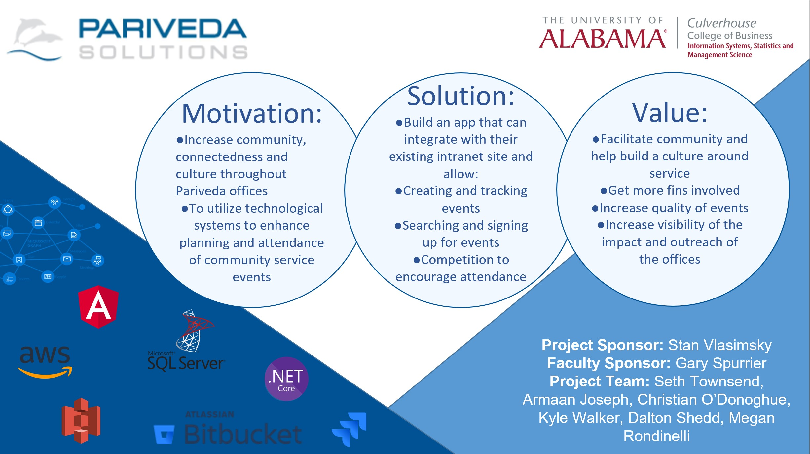

Project Management
My ability to effectiveley delegate, lead, communicate, manage risk, and focus on the client/customer is shown through my work below
I led a team of five UA MIS students in the design and development of a system (web app) that replaced, supplemented, and streamlined current community service event processes.
Status Update
Here is an example of a status update that I put together each week to keep the client up to date on all the new decisions, timelines, accomplishments, risks, and issues


Using Jira I kept track of all of our user stories an used scrum methodolgy to organize and plan our tasks into sprints. One report example is shown below
This is the presentation we gave at the end of the semester to all the stakeholders
Here is a picture that illustrates the project that I managed
Test V
